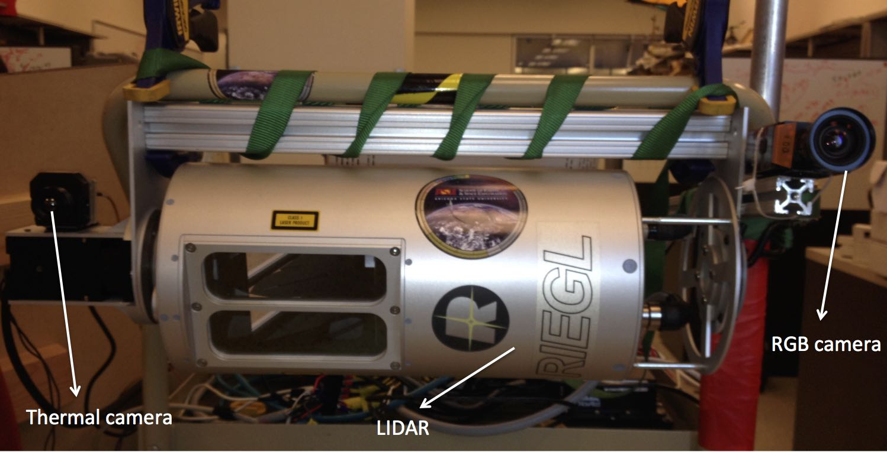
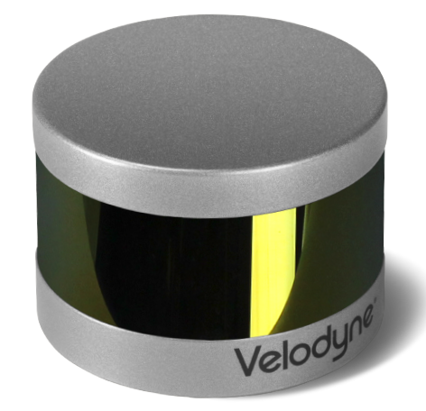
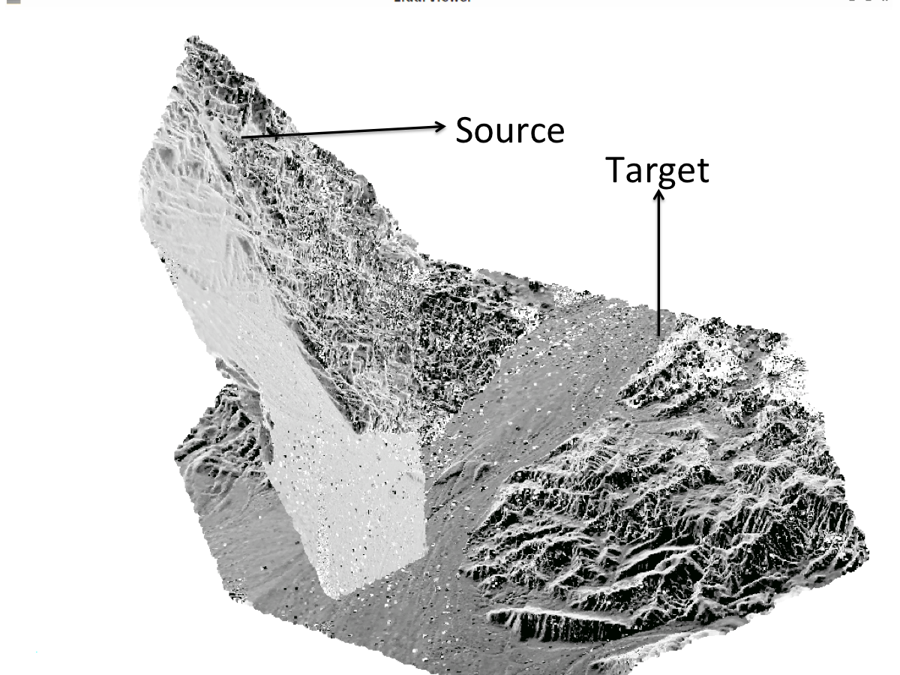
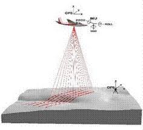
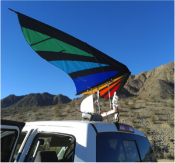
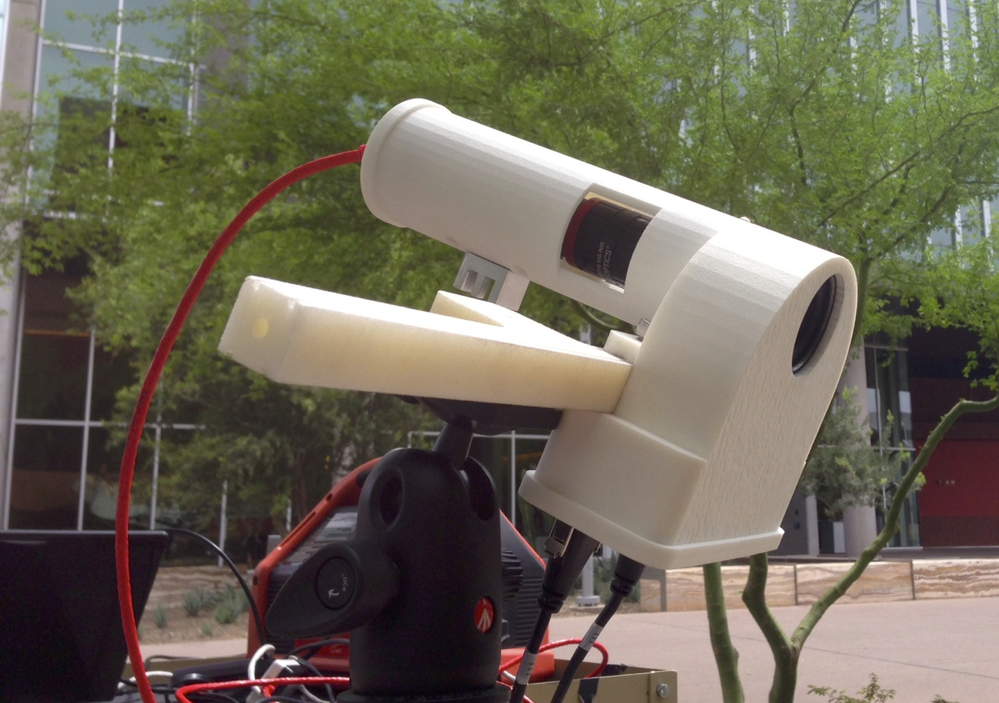
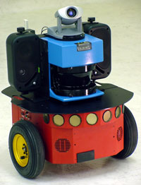

Aravindhan K Krishnan
Robot Vision Researcher
Ph.D. Exploration Systems Design
All these projects were done during my grad school. For info on more recent work, contact me on LinkedIn
Cross-calibration of RGB and Thermal cameras with a LIDAR
 We are building a round-the-clock sensing system that gives textured 3D maps. The system consists of a RIEGL LMSQ240i-80 LIDAR which is tilted by a Robotis motor to give 3D point clouds, a Prosillica GT 1920C camera, a FLIR Tau 2 long wave infra red camera, and a Novatel SPAN-IGM GPS. The first step in getting textured maps from a LIDAR and a camera is to find the extrinsics between the two sensors. We are interested in building a unified solution that can cross-calibrate both the color camera and the thermal camera with the LIDAR. This is a work in progress. The details will be updated soon.
Cross-Calibration of RGB and Thermal Cameras with a LIDAR for RGB-Depth-Thermal Mapping
Aravindhan K Krishnan and Srikanth Saripalli
Unmanned Systems 2017 pdf
Cross-Calibration of RGB and Thermal cameras with a LIDAR
Aravindhan K Krishnan, Benjamin Stinnett, and Srikanth Saripalli
IEEE/RSJ International Conference on Intelligent Robots and Systems (IROS) Workshop on Alternative Sensing for Robot Perception, 2015 pdf
poster
3D mapping using LIDAR
 We used the Iterative Closest Point (ICP) algorithm to build a mapping pipeline that can construct 3D maps from LIDAR data. We tested the pipeline on Velodyne and RIEGL LIDARs.
The Velodyne LIDAR (VLP16) was mounted on a car and was driven around. GPS was NOT used. The setup and the maps along with the trajectory can be found here.
Initial Alignment methods for Point Cloud Registration
 The objective of this project is to register two point clouds in the absence of a good initial estimate of the transformation between them. We approached the problem geometrically by finding congruent structures in the two point clouds. The congruent structure we chose is a pyramid containing a quadrilateral base and an apex. We used the properties of a rigid body transformation to find the congruent structures. Later, from the corresponding points of the congruent structures, we determine the initial estimate using SVD.
Point Cloud Registration Using Congruent Pyramids
Aravindhan K Krishnan and Srikanth Saripalli
IEEE/RSJ International Conference on Intelligent Robots and Systems (IROS) 2014 pdf
Change Detection using Airborne LIDAR
 In this project, we try to measure the local displacements on topographies caused by earthquakes. We use the pre-event and post-event point clouds obtained from airborne LIDAR. The local displacements are computed as the 6DOF transformation between the topographic segments before and after the earthquake. The approach was successfully tested on the datasets of the El Mayor Cucupa earthquake in Mexico, 2010, and the Fukushima-Hamadori earthquake in Japan, 2011.
Change detection using Airborne Systems : Applications to Earthquakes
Aravindhan K Krishnan, Edwin Nissen, Srikanth Saripalli and Ramon Arrowsmith.
International Symposium on Experimental Robotics (ISER) 2012 pdf
Three-dimensional coseismic surface displacements and rotations from pre- and post-earthquake Lidar point clouds
Edwin Nissen, Aravindhan K Krishnan, Ramon Arrowsmith and Srikanth Saripalli
Geophysical Research Letters (GRL), 2012 pdf
Coseismic fault zone deformation revealed with differential LiDAR: examples from Japanese Mw ~7 intraplate earthquakes
Edwin Nissen, Tadashi Maruyama, J. Ramon Arrowsmith, John R. Elliott, Aravindhan K Krishnan, Michael E. Oskin, and Srikanth Saripalli
Earth and Planetary Science Letters (EPSL) 2014pdf
Low-cost Aerial Systems for Change Detection
 This is an extension of our previous project, where we explored the use of low-cost aerial systems like the autonomous kite (built in our lab) for change detection. We mounted a camera on the autonomous kite and collected images of topographies. Later, we built 3D maps from these images using Structure From Motion (SFM). To detect changes, the SFM point cloud was compared with a point cloud obtained from airborne LIDAR. The main problem faced here is to globally register the SFM point cloud with the point cloud from the airborne LIDAR before one can detect changes. We developed a semi-automated method that successfully registers the two point clouds.
3D change detection using low cost aerial imagery
Aravindhan K Krishnan, Srikanth Saripalli, Edwin Nissen and Ramon Arrowsmith
IEEE International Symposium on Safety, Security and Rescue Robotics (SSRR), 2012 pdf
System Development of a 'Visible - Near Infra Red' Multi-spectral Camera
 We built a stereo 'Visible - Near Infra Red' multi-spectral camera that is analogous to the PanCam on the MER rovers. The camera consists of 6 filters across various spectral bands ranging from 450 nm to 1050 nm. The objective of the project is to use the camera for classifying rocks based on their spectral response in the visible-near infra red spectrum. To avoid discrepancies due to the non-linear response characteristics of the detector, we calibrated the detector to find the maximum acceptable pixel value for each spectrum. We also developed an auto exposure algorithm to avoid over-exposure of pixels, which in turn can lead to an incorrect classification of minerals. The camera was tested successfully and delivered to the NASA Ames Research Center.
NIR-CAM : Development of a Near Infrared camera
Aravindhan K Krishnan, Patrick McGarey, Srikanth Saripalli and James F Bell
IEEE International Symposium on Robotic and Sensors Environments (ROSE), 2013 pdf
Point Cloud Library (PCL)
 I participated in the PCL Trimble code sprint. I added new APIs to the PCL registration library. I added algorithms to the Correspondence Estimation and Correspondence Rejection
modules in the registration library. These modules were ported from the libpointmatcher library (from ETH Zurich). Additionally, I added the following algorithms to the
PCL filtering library
: Frustrum Culling, ShadowPoints filter, SamplingSurfaceNormal filter, and NormalSpaceSampling filter.
I participated in the PCL Trimble code sprint. I added new APIs to the PCL registration library. I added algorithms to the Correspondence Estimation and Correspondence Rejection
modules in the registration library. These modules were ported from the libpointmatcher library (from ETH Zurich). Additionally, I added the following algorithms to the
PCL filtering library
: Frustrum Culling, ShadowPoints filter, SamplingSurfaceNormal filter, and NormalSpaceSampling filter.
This blogpost details all my contributions to the PCL library.
Visual Exploration Algorithm Using Semantic Cues
 This is my Masters thesis project. I worked on new exploration strategies for indoor robots that are specific to the semantic-construct (such as office, lab, corridor etc.) the robot is in. I used the Visual-Bag-Of-Words framework to classify the images as an office room / a corridor / a lab etc. and invoked a semantic-construct specific exploration strategy. The final map built is a topological map of nodes containing the places the robot visited and its associated images.
A Visual Exploration Algorithm using Semantic Cues that Constructs Image based Hybrid Maps
Aravindhan K Krishnan and K Madhava Krishna.
IEEE/RSJ International Conference on Intelligent Robots and Systems (IROS) 2010 pdf
Image Based Exploration for Indoor Environments using Local Features
Aravindhan K Krishnan, K Madhava Krishna and Supreeth Achar.
Autonomous Agents and Multi Agent Systems (AAMAS) 2010 pdf